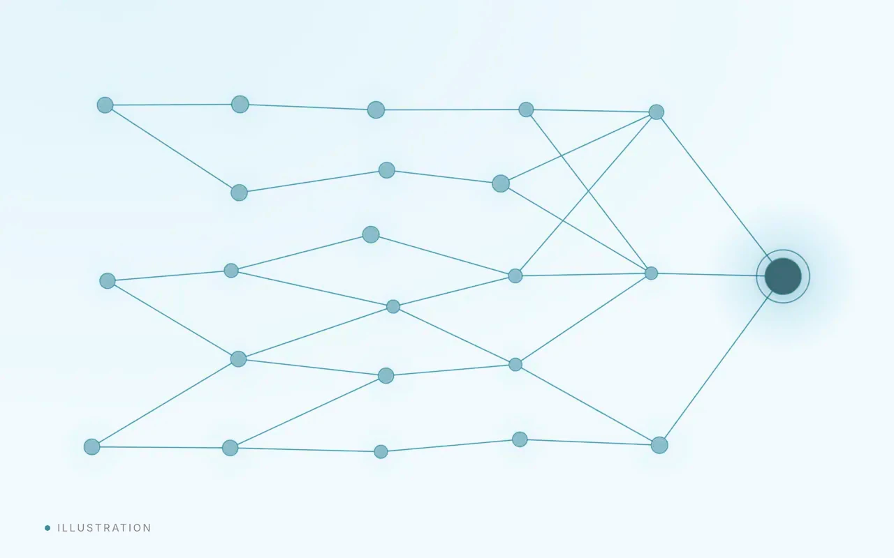
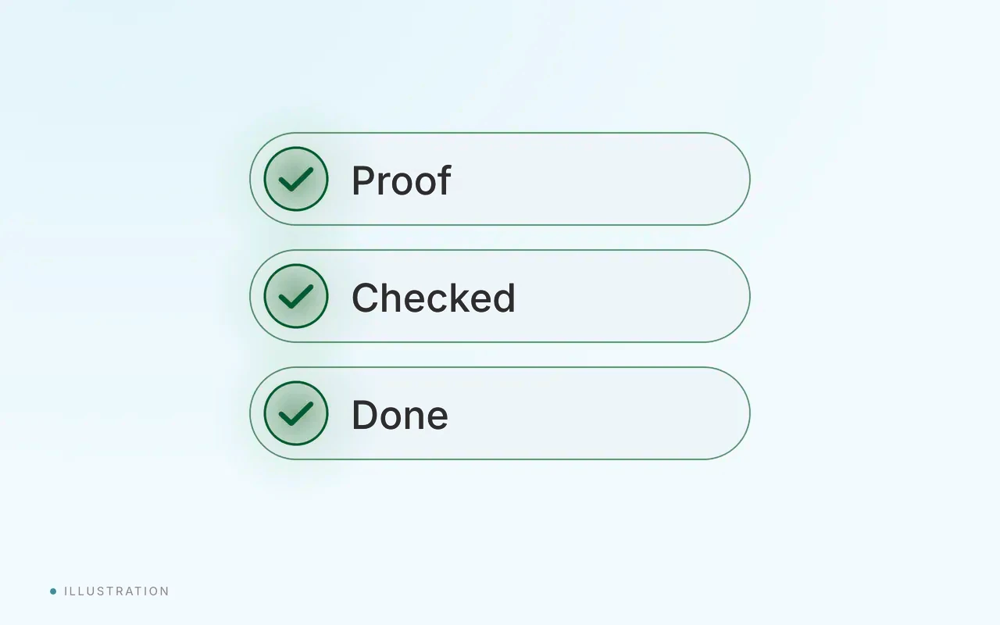
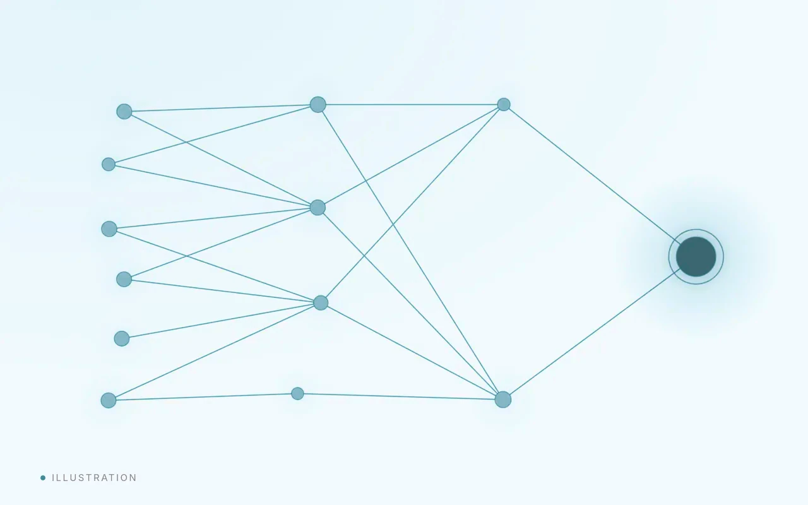

About
Full stack developer. Lead web developer.
I design and build websites, web apps and API integrations, and I lead a small web team.
Who I am
Across the stack. End to end.
I work across the front end, the back end and the APIs between them, and I lead a small web team.
- Builds
- Websites and web apps
- Connects
- AI models to real software
- Leads
- A small web team
- Focus
- Dependable delivery
What I build
Tools and integrations.
Tools around AI models, and the integrations that connect them to real software.


How I work
Engineering first. AI as part of the method.
I work with AI coding tools, including Claude Code, as part of my development workflow.
-
Plan
Define the problem and the structure.
-
Build
Build with AI assistance, at speed.
-
Review
Check the result against the plan and the standards.
-
Ship
Release work I can stand behind.
The future
Why AI-assisted engineering is the future.
Engineering judgment is the scarce skill.
Understanding the problem, choosing the structure and judging the result matter more than typing speed. AI assistance gives that work more of the day.
Iteration gets cheaper.
Routine work moves much faster, so more ideas are built, tested and dropped early.
Accountability stays with the engineer.
An engineer sets the direction and the standards, and owns what ships.
Why I believe it
The knowledge still applies.
Everything I learned as a full stack developer still applies.
- Architecture
- Debugging
- Security
- Testing
- Clean structure
Architecture, debugging, security, testing and clean structure still guide every project. AI tools let me move faster on that foundation, and I keep adapting my workflow as the tools and the team evolve.

Contact